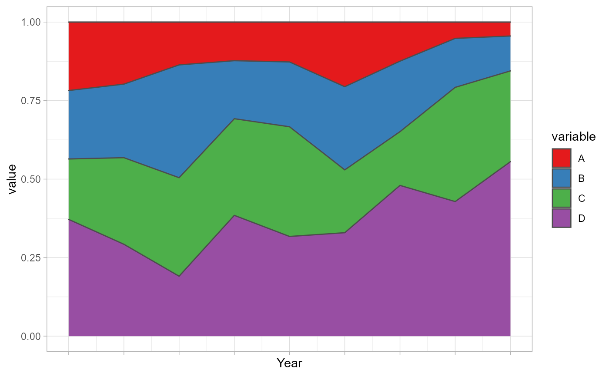

Takes the 'ak_object' from the
'akclustr' as input and produce either the 'line' plot
or 'stacked' histogram.
plot_akstats( ak_object, k = 3, reference = 1, n_quant = 4, type = "lines", y_scaling = "fixed" )
| ak_object | An output of |
|---|---|
| k | [integer] |
| reference | [numeric] Specifying the reference line from
which the direction of each group is measured. Options are:
|
| n_quant | [numeric] Number of equal intervals (quantiles)
to create between the reference line |
| type | [character] plot type. Available options are:
|
| y_scaling | [character] works only if |
A plot showing group membership or sizes (proportion) and statistics.
Generates the plots of cluster groups - same plots
generated by the 'show_plots' argument of print_akstats.
The function draw from the functionalities of the
ggplot2 library.
For a more customized visualisation, we recommend that users
deploy ggplot2 directly (Wickham H. (2016)).
1. Adepeju, M. et al. (2021). Anchored k-medoids:
A novel adaptation of k-medoids further refined to measure
inequality in the exposure to crime across micro places,
doi: 10.1007/s42001-021-00103-1.
2. Wickham H. (2016). Elegant graphics for
Data Analysis. Spring-Verlag New York (2016).
data(traj) trajectry <- data_imputation(traj, id_field = TRUE, method = 1, replace_with = 1, fill_zeros = FALSE)#> [1] "8 entries were found/filled!"#> location_ids X2001 X2002 X2003 X2004 X2005 X2006 X2007 X2008 X2009 #> 1 E01012628 3 0.000 1.000000 2 1 0.000000 1.000 4 0 #> 2 E01004768 9 5.125 2.000000 4 7 5.000000 1.000 3 1 #> 3 E01004803 4 3.000 0.000000 10 2 3.000000 6.000 6 8 #> 4 E01004804 7 3.000 9.000000 3 2 4.857143 6.000 3 2 #> 5 E01004807 2 5.125 5.000000 5 6 4.857143 3.000 5 4 #> 6 E01004808 8 5.000 8.000000 4 1 5.000000 6.000 1 1 #> 7 E01004788 2 4.000 7.333333 2 2 4.000000 1.000 3 0 #> 8 E01004790 10 9.000 17.000000 13 15 4.857143 5.625 19 9 #> 9 E01004805 8 5.000 10.000000 7 9 4.000000 5.625 6 3 #> 10 E01004806 25 12.000 14.000000 15 18 13.000000 21.000 27 17trajectry <- props(trajectry$CompleteData, id_field = TRUE) aksolution <- akclustr(trajectry, id_field = TRUE, method = "linear", k = c(3,5), crit='Calinski_Harabasz')#> [1] "Processing...." #> [1] ".............." #> [1] "solution of k = 3 determined!" #> [1] "solution of k = 4 determined!" #> [1] "solution of k = 5 determined!"plot_akstats(aksolution, k = 4, type="lines", y_scaling="fixed")#> Warning: `fun.y` is deprecated. Use `fun` instead.#> $cluster_plot#>plot_akstats(aksolution, k = 4, reference = 1, n_quant = 4, type="stacked")#> $cluster_plot#>